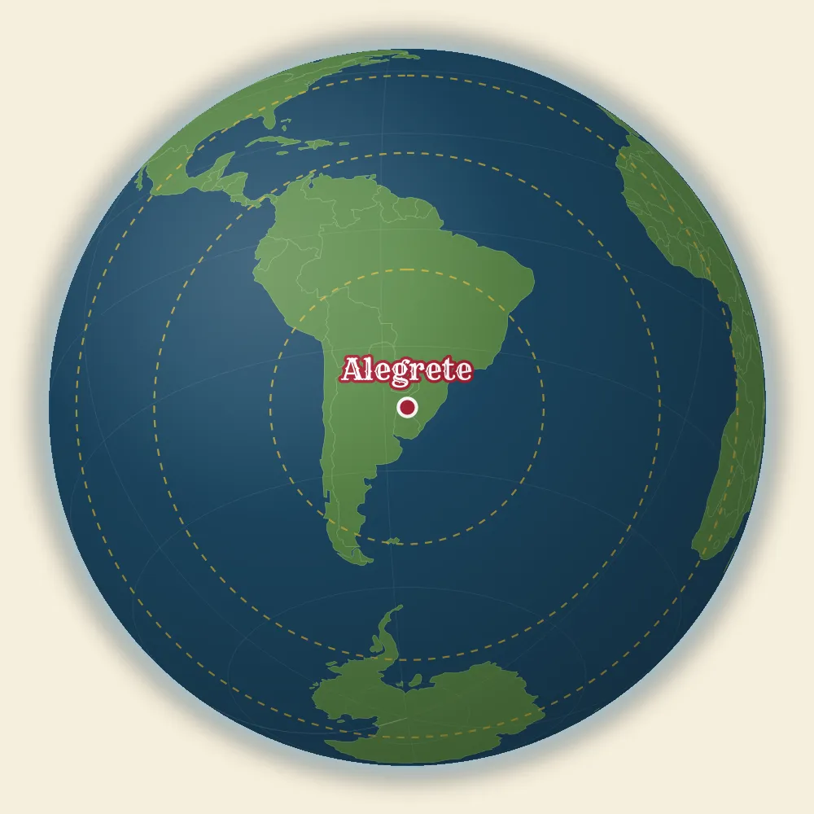
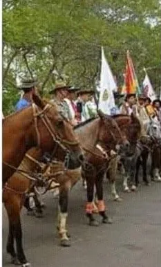

Direto da fronteira oeste do Rio Grande do Sul
Comece a volta ao mundo pelo Alegrete.
Uma viagem sem tirar as botas do pampa: descubra os lugares, histórias e costumes que fazem o Alegrete único.
Comece a viagemBem-vindo, vivente
Aqui, o mundo tem sotaque gaúcho
Entre o rio Ibirapuitã, as coxilhas e as cavalgadas, o Alegrete guarda cenários que lembram — à sua maneira — alguns dos lugares mais famosos do planeta (ou será que foram eles que quiseram nos imitar?).
Este é um convite para olhar a cidade com curiosidade, afeto e uma boa dose de prosa.
Uma volta ao mundo
Do mundo para o Alegrete
Carregando comparações…
Tem uma boa comparação?
O mapa fica mais bonito com a sua história.
Conte qual cantinho do Alegrete lembra um lugar do mundo. A melhor parte desta viagem é fazer ela junto.
Enviar comparação